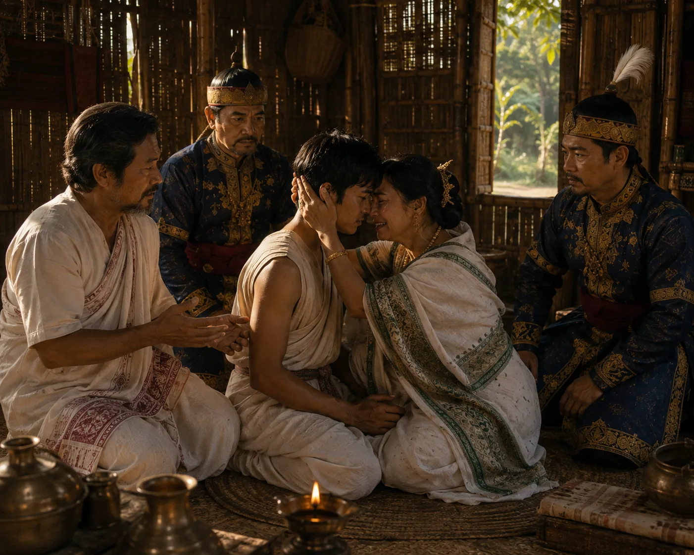

Sudangphaa Identity Confirmation
1397 · The coming of Sukaphaa

Official confirmation of royal bloodline presented to Prince Sudang at Habung by council messengers.
Sources have not yet been catalogued for this record.
People: Sudangphaa (Bamuni Konwar)
Open this scene in the interactive archive · Follow this event on MAP